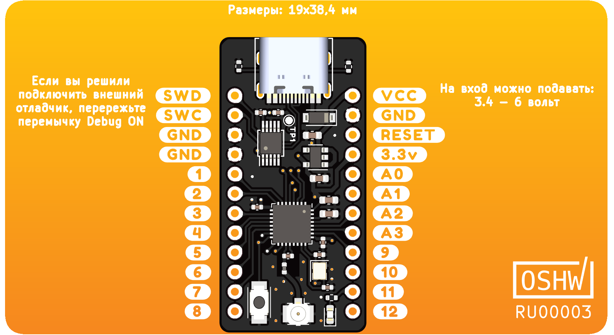

Привет!
Это руководство предназначено для быстрого начала работы с платой crabik на Rust. Если вы впервые слышите про язык программирования Rust, то рекомендуем вам прочитать Язык программирования Rust, а так же изучить Rust на примерах.
Почему Rust?
В отличие от интерпретируемых языков таких как JavaScript и Python, Rust не нуждается в интерпретаторе, он компилируемый, поэтому вам доступно больше ресурсов микроконтроллера. А еще код написаный на Rust намного быстрее!
В среде Arduino используются языки C и C++. В отличие от C и C++, написание кода для микроконтроллера более простое и безопасное. Компилятор Rust при компиляции проверит ваш код на ошибки, и подскажет где в коде спряталась ошибка.
Список используемых компонентов
Для запуска некоторых примеров, можно докупить следующие компоненты:
- Breadboard и Набор перемычек
- Кнопка тактовая с колпачком
- USB-UART преобразователь (Troyka-модуль)
- OLED-дисплей (Troyka-модуль)
Эти компоненты не обязательны, можно изучить все примеры и без них, либо заменить на другие.
ПРИМЕЧАНИЕ Все команды Linux описаны для Ubuntu 18.04 и новее, а так же Debian Stretch и новее. В других дистрибутивах Linux команды и названия пакетов могут отличатся.
Настройка нструментария Rust
Мы рекомендуем использовать Rustup, чтобы легко установить последнюю стабильную версию Rust. Перейдите на https://rustup.rs и следуйте инструкциям.
Пользователи Windows: Нужно установить дополнителный пакет Microsoft C++ Build Tools.
Обновление компилятора и его компонентов: Если у вас уже установлен Rust, убедитесь, что вы используете последнюю версию, запустите
rustup updateв терминале.
Мы рекомендуем использовать стабильную версию копилятора, так как ночные сборки Rust часто ломаются.
Использование стабильной версии копилятора: Rustup можно настроить по умолчанию на стабильную версию компилятора, запустите
rustup default stableв терминале.
Чтобы компилировать код для платы crabik, нужно добавить поддержку архитектуры Cortex-M4 и утилит для анализа скомпилированой программы, запустите в терминале:
rustup target add thumbv7em-none-eabi
rustup component add llvm-tools-preview
Наличие Git: Если у вас не установлен Git, то вам нужно его установить для дальнейшей работы с Cargo. Для установки перейдите на страницу Установка Git и следуйте инструкциям для установки под вашу ОС.
Так же нужно установить утилиты и дополнения для сборщика Cargo. Они нужны для быстрого создания проекта из шаблона, простой загрузки программы, а так же анализа скомпилированной программы. Запустите в терминале:
ПРИМЕЧАНИЕ Если вы используете Linux, то запустите в терминале
sudo apt-get install libudev-dev libusb-1.0-0-devдля установки библиотекиlibusb.
cargo install cargo-binutils probe-run flip-link cargo-embed cargo-flash cargo-generate
Установка инструментов отладки
Инструкция для Windows
ARM предоставляет Набор инструментов GNU, в готовом установщике для Windows.
Скачайте установщик GNU Arm Embedded Toolchain и следуйте инструкциям.
Незадолго до завершения процесса установки выберите опцию "Add path to environment variable".
Затем убедитесь, что инструменты находятся в вашем %PATH%, запустите в терминале:
arm-none-eabi-gcc -v
Если вы увидели информацию о версии, то Набор инструментов GNU установлен.
Для отладки нам понадобится OpenOCD.
Официальной версии OpenOCD для Windows нет, но вы можете скачать xPack OpenOCD.
Извлеките zip архив по пути C:\OpenOCD-0.10, затем добавте в переменную %PATH% путь C:\OpenOCD-0.10\bin.
Проверьте правильность установки, запустив в терминале:
openocd -v
Если вы увидели информацию о версии, то OpenOCD установлен.
Инструкция для Linux
Установите GNU Arm Embedded Toolchain и OpenOCD, запустив в терминале:
sudo apt-get install gdb-multiarch openocd
Инструкция для macOS
Все инструменты можно установить с помощью Homebrew.
Добавте хранилище пакетов ArmMbed, запустив в терминале:
brew tap ArmMbed/homebrew-formulae
Установите GNU Arm Embedded Toolchain, запустив в терминале:
brew install arm-none-eabi-gcc
Установите OpenOCD, запустив в терминале:
brew install openocd
Установка VS Code и расширений
Для написания кода мы будем использовать редактор кода VS Code, в нем хорошо работает Rust Analyzer, а так же он прост в изучении и настройке.
Установка под Windows: Перейдите на https://code.visualstudio.com и нажмите "Download for Windows".
Установка под Linux: Cледуйте инструкциям для вашего дистрибутива на https://code.visualstudio.com/docs/setup/linux.
Установка под macOS: Перейдите на https://code.visualstudio.com и нажмите "Download for Mac".
После установки редактора, нужно установить расширения для удобной работы с Rust, конфигурацией проекта и отладки кода. Запустите следующие команды в терминале:
code --install-extension matklad.rust-analyzer
code --install-extension bungcip.better-toml
code --install-extension marus25.cortex-debug
Знакомство с crabik
Данное руководсво написано для платы crabik, поэтому самое время изучить подробнее саму плату.
Cхема распиновки платы:

Плата питается от USB-C или от напряжения поданого на вход контакта VCC.
Контакт 3.3v при отсутствии какого либо напряжения может принимать 3.3 вольта, либо если плата запитана от какого либо источника, выдает 3.3 вольта.
Максимально допустимый ток от контакта 3.3v - 400mA.
Мозгом платы является микроконтроллер nRF52810 компании Nordic Semiconductor. Внутри него ядро Arm Cortex-M4, работающее на частоте 64Mhz.
Периферия может быть настроена на любой вывод микроконтроллера, исключением является ADC, входом которого могут быть только пины с A0 по A3.
Светодиод на плате подключен к выводу 11. Кнопка рядом с выводами 7 и 8, это Reset (сброс микроконтроллера).
Для загрузки программы на микроконтроллер используется отдельная микросхема отладки совместимая с протоколом CMSIS-DAP v1.
При использовании внешнего отладчика, отключите внутренний, перерезав перемычку Debug ON.
Для востановления работы внутреннего отладчика, запаяйте перемычку.
Так же для меньшего потребления в режиме сна, рекомендуется отключать внешний отладчик.
HAL
Немного о HAL
HAL - это Уровень аппаратной абстракции для встраиваемых систем.
В Rust сообществе используется модуль embedded-hal.
Она предоставляет абстракции для взаимодействия модуля периферии конкретного микроконтроллера и модуля использующей периферию (например модуль для работы с дисплеем по SPI).
Это позволяет написать один модуль, и использовать его на разных платах.
Идея похожа на Arduino.
Так же следует знать немного о PAC.
Это модуль предоставляющий удобное взаимодействие с регистрами периферии конкретного микроконтроллера.
Модули PAC генерируются автоматически из файла SVD для каждого микроконтроллера.
Эти модули используются в hal для конкретного микроконтроллера.
Для удобства модуль crabik-board содержит в себе модули nrf52810-hal и nrf52810-pac.
Вы можете использовать их импортируя по пути crabik_board::hal и crabik_board::pac.
Документация по модулю nrf52810-hal доступна на docs.rs
Описание частей встроенной программы
Мы расмотрим элементы встроенной программы на Rust, которых нет в обычной программе для компьютера.
Для начала создайте новый проект из шаблона, запустите в терминале:
cargo generate --git https://github.com/CrabikBoards/crabik-app-template.git --name hello-crabik
И откройте созданный проект в VS Code (File > Open Folder в меню VS Code), далее откройте файл main.rs в папке src.
В файле вы увидите следующие новые элементы:
#![no_std]
Атрибут #![no_std] указывает, что программа не будет использовать модуль std, используемый при написании програм для ПК.
Вместо этого он будет использовать модуль core, подмножество стандартного модуля, которая не зависит от операционной системы (ОС).
#![no_main]
Атрибут #![no_main] указывает, что программа будет использовать пользовательскую "точку старта" вместо точки по умолчанию fn main() {..}.
#[cortex_m_rt::entry]
Макрос #[cortex_m_rt::entry] добавляет к ниженаписанной функции main минимальный код необходимый для работы программы, создавая тем самым "точку старта".
Функция не может возвращать какое либо значение и не может завершится, поэтому в конце функции есть вызов crabik_board::exit() которая безопасно "завершает" программу (по факту являясь безконечным циклом).
Привет, мир!
Пришло время написать код на Rust для crabik! Для начала создайте новый проект из шаблона, запустите в терминале:
cargo generate --git https://github.com/CrabikBoards/crabik-app-template.git --name hello-crabik
Начнем с открытия ранее созданного проекта, откройте его в VS Code (File > Open Folder в меню VS Code), далее откройте файл main.rs в папке src.
В файле вы увидите следующий код:
// Файл с основным кодом программы // Отключение стандартной "точки старта" от компилятора #![no_main] // Отключение модуля std #![no_std] // Импорт модуля для платы crabik use crabik_board::{ // Модуль содержащий hal для nrf52810 hal::{ // Модуль с ранообразными обьявлениями для удобной работы prelude::*, // Модуль для настройки тактирования микроконтроллера Clocks, }, pac::Peripherals, CrabikPins, Logger, }; // Импорт модуля для работы с протоколом RTT use rtt_target::*; // Макрос предоставляющий "точку старта" #[cortex_m_rt::entry] fn main() -> ! { // Инициализация канала RTT rtt_init_print!(NoBlockSkip, 16384); // Получение всей периферии микроконтроллера let periph = Peripherals::take().expect("Не удалось получить доступ к периферии микроконтроллера"); // Получение всей периферии ядра Cortex-M let core_periph = cortex_m::Peripherals::take().expect("Не удалось получить доступ к периферии ядра"); // Установка логгера (обертки поверх RTT) log::set_logger(&Logger).expect("Не удалось установить логгер"); // Установка фильтра логов по умолчанию на Info (Информационные сообщения) log::set_max_level(log::LevelFilter::Info); // Передача переферии для настройки тактирования микроконтроллера let clocks = Clocks::new(periph.CLOCK); // Использовать внешний источник (кварц) для тактирования микроконтроллера let clocks = clocks.enable_ext_hfosc(); // Использовать внутренний источник (кварц) для тактирования Rtc (часов) let clocks = clocks.set_lfclk_src_rc(); // Здесь пишем наш код // Завершение программы (просто бесконечный цикл) crabik_board::exit(); }
Как видите, код имеет много комментариев и можно поверхностно понять что делает каждая строка. В приведенном выше коде происходит получение всей периферии, настройка логирования и настройка тактирования микроконтроллера.
Добавьте после комментария // Здесь пишем наш код, строчку rprintln!("Привет, мир!");.
В итоге, у вас должен получится следующий код:
// Файл с основным кодом программы // Отключение стандартной "точки старта" от компилятора #![no_main] // Отключение модуля std #![no_std] // Импорт модуля для платы crabik use crabik_board::{ // Модуль содержащий hal для nrf52810 hal::{ // Модуль с ранообразными обьявлениями для удобной работы prelude::*, // Модуль для настройки тактирования микроконтроллера Clocks, }, pac::Peripherals, CrabikPins, Logger, }; // Импорт модуля для работы с протоколом RTT use rtt_target::*; // Макрос предоставляющий "точку старта" #[cortex_m_rt::entry] fn main() -> ! { // Инициализация канала RTT rtt_init_print!(NoBlockSkip, 16384); // Получение всей периферии микроконтроллера let periph = Peripherals::take().expect("Не удалось получить доступ к периферии микроконтроллера"); // Получение всей периферии ядра Cortex-M let core_periph = cortex_m::Peripherals::take().expect("Не удалось получить доступ к периферии ядра"); // Установка логгера (обертки поверх RTT) log::set_logger(&Logger).expect("Не удалось установить логгер"); // Установка фильтра логов по умолчанию на Info (Информационные сообщения) log::set_max_level(log::LevelFilter::Info); // Передача переферии для настройки тактирования микроконтроллера let clocks = Clocks::new(periph.CLOCK); // Использовать внешний источник (кварц) для тактирования микроконтроллера let clocks = clocks.enable_ext_hfosc(); // Использовать внутренний источник (кварц) для тактирования Rtc (часов) let clocks = clocks.set_lfclk_src_rc(); rprintln!("Привет, мир!"); // Завершение программы (просто бесконечный цикл) crabik_board::exit(); }
В шаблоне проекта уже содержатся настройки для простого запуска программы. Вам нужно только подключить плату к компьютеру и запустить в терминале:
cargo run
Но для удобной и быстрой разработки рекомендуется использовать для запуска команду:
cargo embed --release
В терминале вы увидите текст: Привет, мир!.
Работа с GPIO
Теперь пора подключить кнопку к плате и заставить светодиод мигать.
Начнем с мигания светодиодом.
Добавьте модули delay и gpio в импорт crabik_board::hal.
В созданном проекте напишите следующий код:
#![allow(unused)] fn main() { // Разделение GPIO на отдельные пины let port0 = gpio::p0::Parts::new(periph.P0); // Создание "задержки" let mut delay = delay::Delay::new(core_periph.SYST); // Макрос который переименовывает пины микроконтроллера в названия пинов на плате let pins = crabik_board::rename_pins!(port0); // Переводит пин 11 в режим выхода let mut led = pins.d11.into_push_pull_output(gpio::Level::Low); loop { // Устанавливает высокий уровень на пине led.set_high().unwrap(); // Задержка на 1 секунду delay.delay_ms(1_000_u32); // Устанавливает низкий уровень на пине led.set_low().unwrap(); // Задержка на 1 секунду delay.delay_ms(1_000_u32); } }
Далее разберемся что именно делает этот фрагмент кода:
- Строчка
let port0 = p0::Parts::new(periph.P0);.Тут мы передаем периферию GPIO для разделения на отдельные пины (в микроконтроллерах пины обычно представлены портом, через него можно управлять множеством пинов сразу, для удобства использования порты разделяют на отдельные пины). - Строчка
let mut delay = Delay::new(core_periph.SYST);. Тут мы передаем системный таймер SysTick в структуру Delay. Delay использует данный таймер для точного отсчета задержки. - Строчка
let pins = crabik_board::rename_pins!(port0);. Тут мы передаем уже разделенные пины макросу, который из названия пина напримерp0_01, сделает егоd11. Можно его не использовать, но тогда нужно смотреть на схему платы для того что-бы узнать название пина. - Строчка
let mut led = pins.d11.into_push_pull_output(Level::Low);. Тут мы переводим пин11в режим вывода с подтяжкой к земле. - Далее идет бесконечный цикл. В нем мы мигаем светодиодом.
Теперь можно добавить нашу кнопку.
Подключим кнопку к выводу A0.
После строки где мы переводили пин 11 в режим вывода, добавте строку:
#![allow(unused)] fn main() { // Переводит пин A0 в режим входа с подтяжкой к 3.3 вольтам let button = pins.a0.into_pullup_input(); }
И измените цикл на:
#![allow(unused)] fn main() { loop { // Если кнопка нажата то включаем светодиод if button.is_low().unwrap() { led.set_high().unwrap(); } else { led.set_low().unwrap(); } } }
В итоге у нас получилась программа, которая включает светодиод если на пине A0 низкий уровень (кнопка нажата).
Работа с PWM (ШИМ)
Просто мигать светодиодом быстро надоест, поэтому сейчас мы будем менять его яркость. Изменять яркость можно с помощью PWM.
В проект добавьте модули gpio и pwm в импорт crabik_board::hal.
Напишите следующий код:
#![allow(unused)] fn main() { // Разделение GPIO на отдельные пины let port0 = gpio::p0::Parts::new(periph.P0); // Создание "задержки" let mut delay = delay::Delay::new(core_periph.SYST); // Макрос который переименовывает пины микроконтроллера в названия пинов на плате let pins = crabik_board::rename_pins!(port0); // Переводит пин 11 в режим выхода let led = pins.d11.into_push_pull_output(gpio::Level::Low).degrade(); // Переводит пин A0 в режим входа let button = pins.a0.into_pullup_input(); // Подготовка к работе PWM let pwm = pwm::Pwm::new(periph.PWM0); pwm.set_period(1_000u32.hz()) // устанавливает выходную частоту PWM .set_output_pin(pwm::Channel::C0, &led) // связывает пин с каналом PWM .enable(); // включает генератор PWM // Устанавливает максимальное значение цикла pwm.set_max_duty(255); let mut led_brightness: u8 = 0; loop { if button.is_low().unwrap() { led_brightness += 10; // Устанавливаем сколько вывод должен быть включен pwm.set_duty_off(pwm::Channel::C0, led_brightness as u16); } delay.delay_ms(100u32); } }
Описанный выше код устанавливает максимальное значение цикла PWM, в цикле опрашивает кнопку, если кнопка нажата, то увеличиваем значение яркости светодиода, и задаем значение PWM.
Когда переменная led_brightness доходит до значения 255, она переполняется и становится снова 0.
Следующий пример покажет как плавно увеличивать и уменьшать яркость светодиода. После строк настройки PWM измените код на:
#![allow(unused)] fn main() { // Устанавливает максимальное значение цикла pwm.set_max_duty(255); let mut up = true; let mut n = 0; let mut delay_change = 10; loop { delay.delay_ms(delay_change); if up { n += 1; if n >= pwm.max_duty() { up = false } } else { n -= 1; if n <= 0 { up = true } } pwm.set_duty_off(pwm::Channel::C0, n); // Неравномерная задержка delay_change = (200 / (n + 4)) + 1; } }
Работа с ADC
Для оцифровки аналоговых значений у nRF52 есть SAADC (ADC). Самое время его изучить.
С SAADC могут работать только пины с A0 по A3.
В проект добавьте модули gpio и saadc в импорт crabik_board::hal.
Напишите следующий код:
#![allow(unused)] fn main() { // Разделение GPIO на отдельные пины let port0 = gpio::p0::Parts::new(periph.P0); // Макрос который переименовывает пины микроконтроллера в названия пинов на плате let pins = crabik_board::rename_pins!(port0); // Подготовка пинов let mut an_in = pins.a0.into_floating_input(); // Подготовка к работе SAADC let mut adc = saadc::Saadc::new(periph.SAADC, saadc::SaadcConfig::default()); // Измеряет напряжение с длительностью указанной в конфигурации SAADC, по умолчанию это 20 микросекунд let value = adc.read(&mut an_in).expect("Не удалось считать напряжение с пина"); }
В показанном выше примере мы настраиваем пины и сам SAADC.
После настройки SAADC, производим измерение напряжения на пине A0.
Работа с UART
Работать только с кнопками и светодиодами не очень интересно. К плате можно подключать различные сенсоры и прочее. Для общения с ними может понадобится UART, SPI, TWI (I2C). Начнем с UART.
В проект добавте модули gpio и uarte в импорт crabik_board::hal.
Напишите следующий код:
#![allow(unused)] fn main() { // Разделение GPIO на отдельные пины let port0 = gpio::p0::Parts::new(periph.P0); // Макрос который переименовывает пины микроконтроллера в названия пинов на плате let pins = crabik_board::rename_pins!(port0); // Подготовка пинов let rxd = pins.d9.into_floating_input().degrade(); let txd = pins.d10.into_push_pull_output(gpio::Level::Low).degrade(); // Подготовка к работе UART let mut uart = uarte::Uarte::new( periph.UARTE0, uarte::Pins { rxd: rxd, txd: txd, cts: None, rts: None, }, uarte::Parity::EXCLUDED, uarte::Baudrate::BAUD115200, ); // Создание буферов для передачи и приема данных let mut tx_buffer = [0u8; 255]; let mut rx_buffer = [0u8; 255]; // Отправка "сырых" данных let data = b"Hello!\n"; // Копируем все данные в буфер, что бы EasyDMA работал с оперативной памятью, а не с флешем tx_buffer[0..data.len()].copy_from_slice(data); uart.write(&tx_buffer).expect("Не удалось передать данные"); // Прием "сырых" данных uart.read(&mut rx_buffer).expect("Не удалось получить данные"); }
В показанном выше примере настраиваются пины TX и RX, и сам UART. После настройки UART мы оправляем и принимаем "сырые" байты.
Отправлять текст в UART удобнее через модуль fmt библеотеки core.
Добавьте импорт core::fmt::Write, и можете использовать вместо uart.write следующий код:
#![allow(unused)] fn main() { // Запись в UART форматированной строки let number = 321; writeln!(uart, "Пример форматированного вывода, number = {}", number).expect("Не удалось передать данные"); }
Работа с SPI
Для работы с дисплеями или быстрыми сенсорами не очень удобно использовать UART, для этого использую SPI. Самое время его изучить.
У nRF52 SPI разделен на две части - это SPIM и SPIS:
- SPIM - это SPI работающий в роли мастера, подходит для управления разными устройствами по SPI.
- SPIS - это SPI подходящий для работы в роли например сенсора, оно общается с мастером, но не управляет обменом информацией.
В проект добавьте модули gpio , spim или spis в импорт crabik_board::hal.
Часто используемый режим - SPI мастер, поэтому примеры далее будут про spim модуль.
Напишите следующий код:
#![allow(unused)] fn main() { // Разделение GPIO на отдельные пины let port0 = gpio::p0::Parts::new(periph.P0); // Макрос который переименовывает пины микроконтроллера в названия пинов на плате let pins = crabik_board::rename_pins!(port0); // Подготовка пинов let clk = pins.d9.into_push_pull_output(gpio::Level::Low).degrade(); let mosi = pins.d10.into_push_pull_output(gpio::Level::Low).degrade(); let miso = pins.d11.into_floating_input().degrade(); let cs = pins.d12.into_push_pull_output(gpio::Level::Low).degrade(); // Подготовка к работе SPI мастера let mut spi = spim::Spim::new( periph.SPIM0, spim::Pins { sck: clk, miso: Some(miso), mosi: Some(mosi), }, spim::Frequency::M1, spim::MODE_0, 0, ); // Создание буферов для передачи и приема данных let mut tx_buffer = [0u8; 255]; let mut rx_buffer = [0u8; 255]; let data = b"Hello!\n"; // Копируем все данные в буфер, что бы EasyDMA работал с оперативной памятью, а не с флешем tx_buffer[0..data.len()].copy_from_slice(data); // Передача и прием данных spi.transfer_split_uneven(&mut cs, &tx_buffer, &mut rx_buffer) .expect("Не удалось передать или получить данные"); }
В показанном выше примере мы настраиваем пины и сам SPI. После настройки SPI отправляем и принимаем "сырые" байты.
Работа с TWI (I2C)
Для работы с большим количеством устройств придумали I2C. У nRF52 I2C называется TWI. Самое время его изучить.
У nRF52 TWI разделен на две части - это TWIM и TWIS:
- TWIM - это TWI работающий в роли мастера, подходит для управления разными устройствами.
- TWIS - это TWI подходящий для работы в роли например сенсора, оно общается с мастером, но не управляет обменом информацией.
В проект добавьте модули gpio , twim или twis в импорт crabik_board::hal.
Часто используемый режим - TWI мастер, поэтому примеры далее будут про twim модуль.
Напишите следующий код:
#![allow(unused)] fn main() { // Разделение GPIO на отдельные пины let port0 = gpio::p0::Parts::new(periph.P0); // Макрос который переименовывает пины микроконтроллера в названия пинов на плате let pins = crabik_board::rename_pins!(port0); // Подготовка пинов let scl = pins.d9.into_floating_input().degrade(); let sda = pins.d10.into_floating_input().degrade(); // Подготовка к работе TWI мастера let mut i2c = twim::Twim::new( periph.TWIM0, twim::Pins { scl, sda }, twim::Frequency::K100 ); // Создание буферов для передачи и приема данных let mut tx_buffer = [0u8; 255]; let mut rx_buffer = [0u8; 255]; let data = [1, 2, 3, 4, 5, 6, 7, 8]; // Копируем все данные в буфер, что бы EasyDMA работал с оперативной памятью, а не с флешем tx_buffer[0..data.len()].copy_from_slice(&data); // Передача данных на устройство по адресу 0x90 i2c.write(0x90, &tx_buffer) .expect("Не удалось передать данные на устройство по адресу 0x90"); // Прием данных от устройства по адресу 0x90 i2c.read(0x90, &mut rx_buffer) .expect("Не удалось получить данные от устройства по адресу 0x90"); }
В показанном выше примере настраиваются пины и сам TWI. После настройки TWI мы отправляем и принимаем "сырые" байты по адресу 0x90.
Использование периферии в модулях
Изучив отдельно настройку и использование периферии микроконтроллера, можно её использовать для работы с устройством.
Для примера возьмем дисплей и кнопку.
Для работы с дисплеем будем использовать уже написанный модуль.
А для кнопки напишем свой, чтобы немного понять как использовать hal со стороны модуля.
Добавьте модуль ssd1306 в зависимости созданного проекта.
Например, это можно сделать добавив ssd1306 = "0.5.1" в раздел dependencies файла Cargo.toml.
Таким же образом добавьте модули embedded-graphics = "0.6.2" и heapless = "0.6.1".
Модуль (драйвер) ssd1306 отвечает за общение с дисплеем. Модуль embedded-graphics предоставляет функционал для работы с графикой. Рисование фигур, картинок, текста разных стилей. Вы легко сможете поменять драйвер дисплея, сильно не меняя код отвечающий за рисование графики. Модуль heapless предоставляет различные структуры данных которые не используют динамическое выделение памяти.
Перед написанием самой программы, создадим наш учебный модуль для кнопки. В папке с проектом, запустите в терминале:
cargo new button --lib
И в зависимости проекта добавьте button = {path = "./button"}.
В зависимости созданного модуля добавьте embedded-hal = "0.2.4".
После того как все зависимости добавлены, можно писать код.
Напишите следующий код в файле src/lib.rs модуля button:
#![allow(unused)] fn main() { // Файл с основным кодом модуля // Отключение стандартной библиотеки #![no_std] // Импорт трейта для пина входа use embedded_hal::digital::v2::InputPin; /// /// Мини реализация кнопки /// pub struct Button<PIN> where PIN: InputPin, { button_pin: PIN, value: u32, } impl<PIN, PinE> Button<PIN> where PIN: InputPin<Error = PinE>, { /// /// Создает новый экземпляр драйвера /// /// # Аргументы /// /// * `button_pin` - пин к которому подключена кнопка /// pub fn new(button_pin: PIN) -> Self { Self { button_pin, value: 0 } } /// /// Считывает состояние и возвращает кол-во нажатий /// pub fn tick(&mut self) -> Result<u32, PinE> { if self.button_pin.is_low()? { self.value += 1; } Ok(self.value) } /// /// Освобождаем пин кнопки /// pub fn release(self) -> PIN { self.button_pin } } }
Написанный выше код имеет:
- Функцию
newдля создания нового экземпляра драйвера. Функция принимает все что, реализует функционалInputPin. В документации поembedded-halсодержится больше информации об использовании различной периферии в модулях. Документация по модулюembedded-halдоступна на docs.rs. - Функцию
tick, где получаем значение пина к которому подключена кнопка, если кнопка нажата, то увеличиваем внутреннюю переменную на 1. Возвращает кол-во нажатий. - Функцию
releaseдля освобождения переданной драйверу периферии. У большинства драйверов для работы с каким-либо устройством, имеется похожая функция.
Напишем следующий код в файле самого проекта:
#![allow(unused)] fn main() { // Разделение GPIO на отдельные пины let port0 = gpio::p0::Parts::new(periph.P0); // Создание "задержки" let mut delay = delay::Delay::new(core_periph.SYST); // Макрос который переименовывает пины микроконтроллера в названия пинов на плате let pins = crabik_board::rename_pins!(port0); // Подготовка пинов let scl = pins.d9.into_floating_input().degrade(); let sda = pins.d10.into_floating_input().degrade(); // Подготовка к работе TWI мастера let i2c = twim::Twim::new(periph.TWIM0, twim::Pins { scl, sda }, twim::Frequency::K400); // Создание экземпляра кнопки и передача пина к которому подключена кнопка let mut button = button::Button::new(pins.a0.into_pullup_input()); // Прослойка отправки команд для дисплея через I2C // Это нужно т.к. контроллер дисплея может работать как по I2C так и по SPI let interface = I2CDIBuilder::new().init(i2c); // Соединение и подготовка к работе дисплея let mut display: GraphicsMode<_, _> = Builder::new().connect(interface).into(); display.init().expect("Не удалось подготовить к работе дисплей"); // Создание стиля текста let text_style = TextStyleBuilder::new(Font6x8) .text_color(BinaryColor::On) .background_color(BinaryColor::Off) .build(); // Создание фиксированного размера строки, для работы без динамического выделения памяти let mut text = heapless::String::<consts::U20>::new(); loop { // Отчищаем строку от предыдущего значения text.clear(); // Записываем новое значение в строку write!( &mut text, "Сlicks: {}", button.tick().expect("Не удалось получить значение нажатий") ) .expect("Не удалось записать данные"); // Отрисовываем текст Text::new(text.as_str(), Point::zero()) .into_styled(text_style) .draw(&mut display) .expect("Не удалось отрисовать на дисплее"); // Передаем все что отрисовали на дисплей display.flush().expect("Не удалось обновить дисплей"); delay.delay_ms(100u32); } }
В показанном выше примере мы выводим на дисплей кол-во нажатий кнопки.